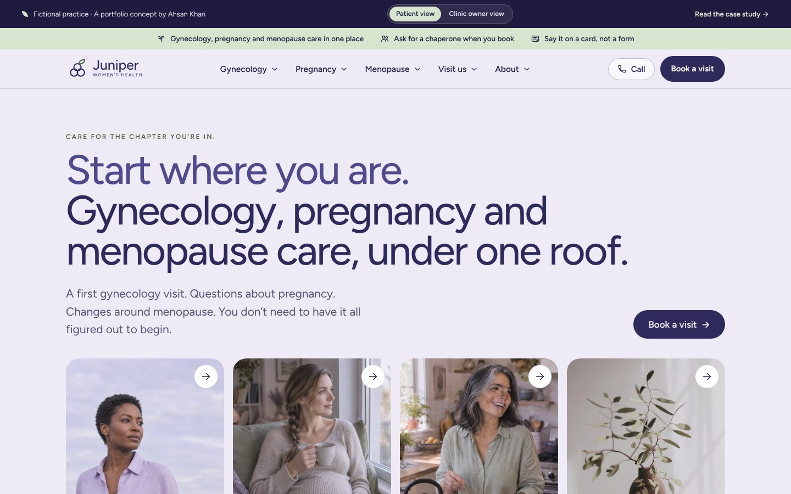
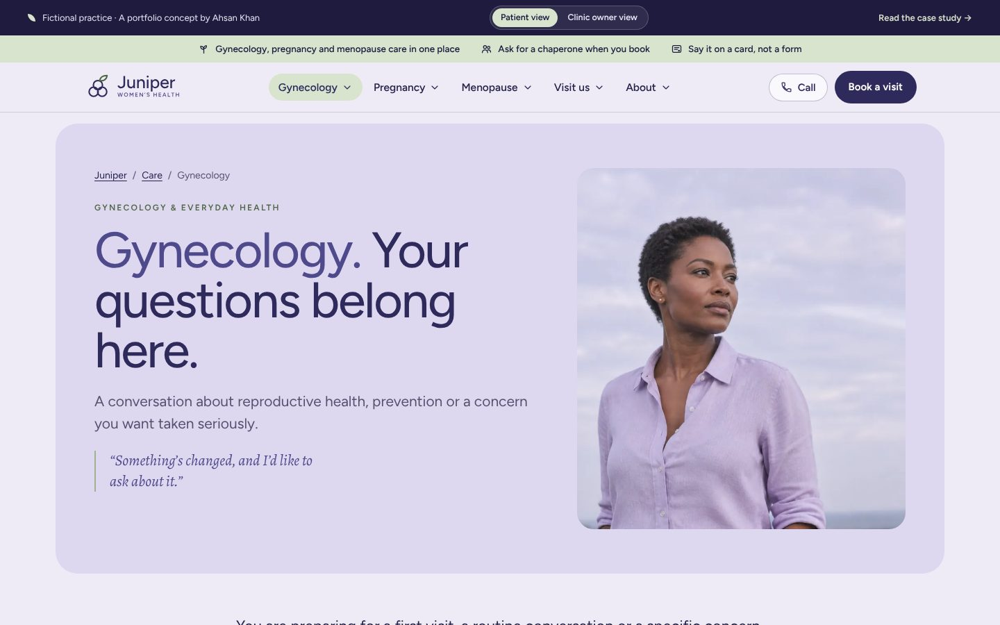
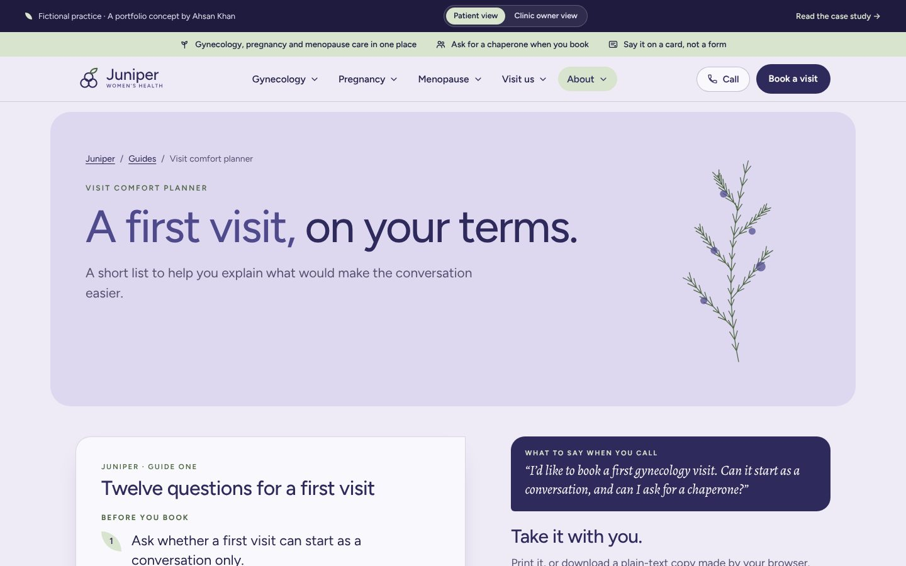
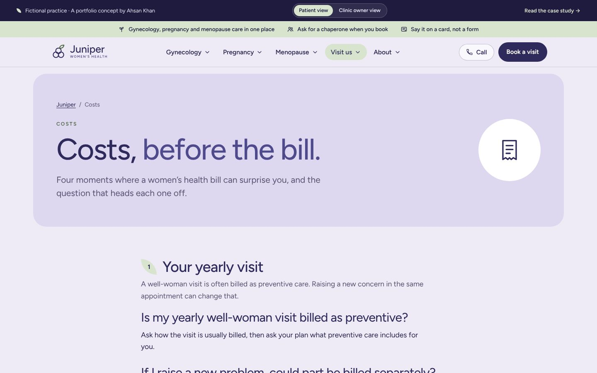
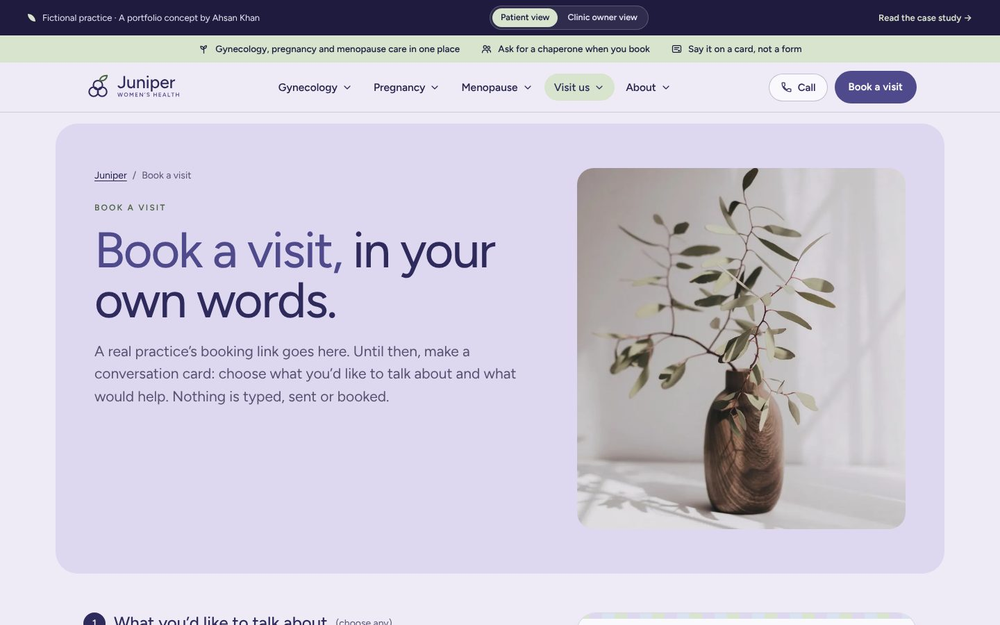
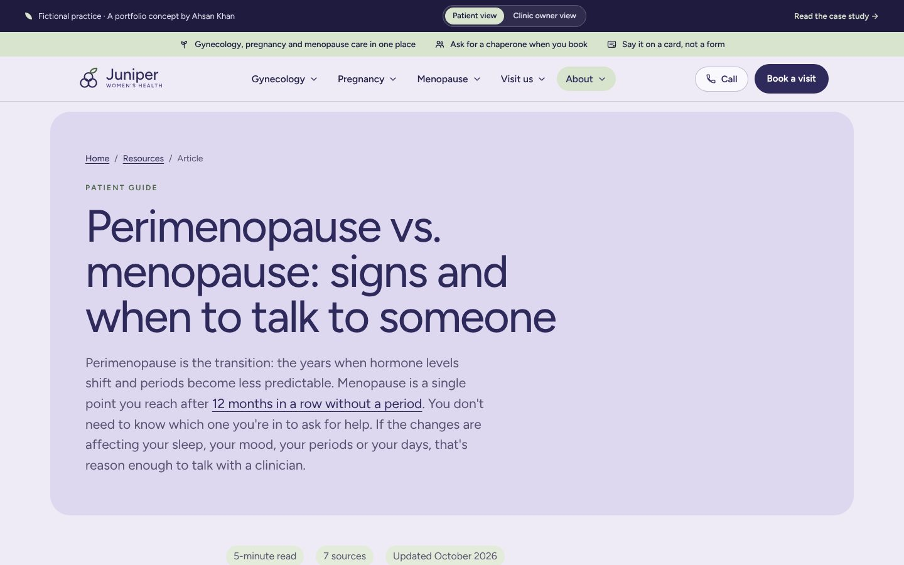
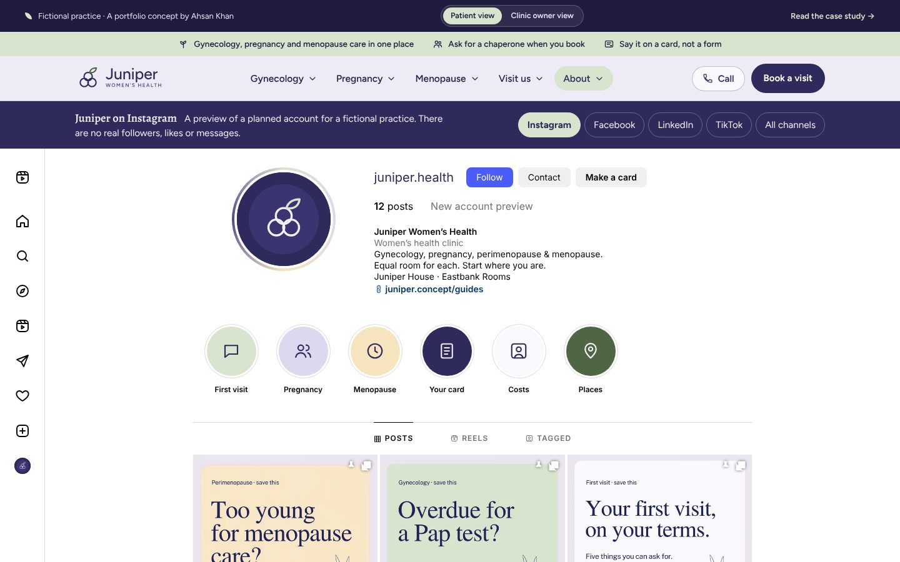
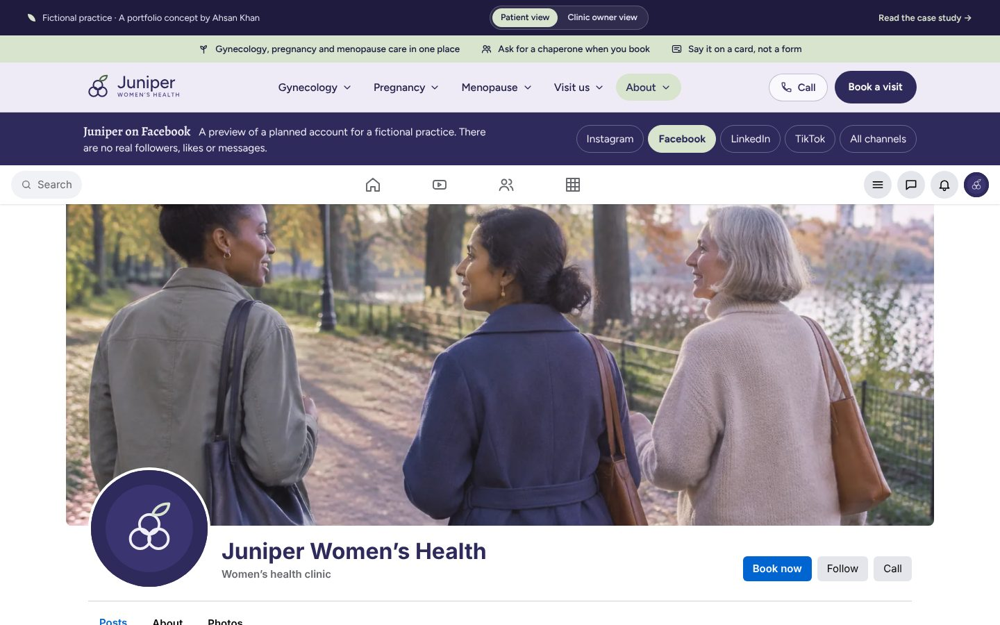
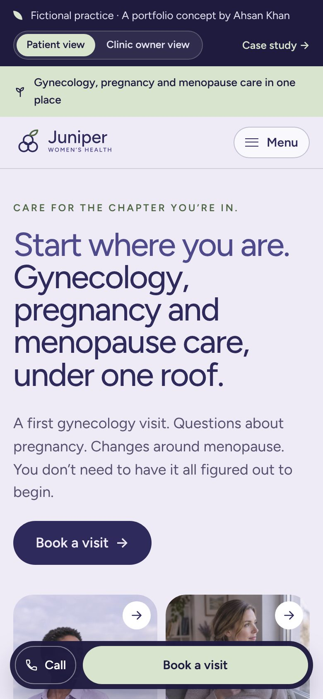
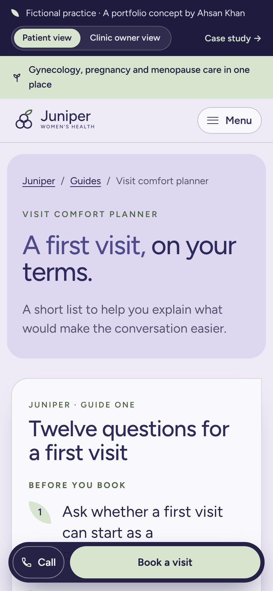

07Fictional healthcare brand · Content, design & build
Organize care around the conversation, not an assumed life plan.
One opening line, followed from a generic promise to the live page.
Scroll: write, design, build
Juniper Women’s Health is an original fictional brand. Women’s Healthcare Associates was a research reference, not a client. No patient research, clinical review, live integration or measured campaign result is claimed.

01Write
Is there room here for me?
The generic line promised every stage. It still assumed one life plan.
The first draft: Exceptional care through every stage of womanhood.
AK · 01A promise isn’t a way in.
Then meet them where they are.
Three reasons to visit, named plainly. Nobody has to fit a box first.
The rewrite: Start where you are. Gynecology, pregnancy and menopause care, under one roof.
02Design
Give every route equal room.
Grey boxes first. The line on top, then four doors of the same size.
AK · 02Nobody is shown pregnancy first.
Make it feel like Juniper.
Plum and sage on warm paper. Soft, rounded and calm.
03Build
Ship the real page.
One of 25 pages, with a conversation card that never leaves the browser.
AK · 03Live. Open it and try.
Every card has two readers.
Flip it. The clinic owner sees what intake would receive from the card.

- 01Write
- 02Design
- 03Build
I wrote it, designed it and built it.
From the first click to the front desk, you talk to me.
Explore all four social profiles ↗For the curiousThe video, the full kit, every version and how it was checked
- Project
- Independent fictional practice
- Role
- Research, content, brand direction & build
- Deliverable
- 25 pages · 4 social profiles · Conversation card
- Tools
- HTML, CSS & JavaScript · its own static generator
The kit: what Juniper Women’s Health shipped, beyond the pages
Reality checkThe real market, references and rules behind a fictional practice
Modeled on · Austin, TX
Medicaid pays for close to half of Texas births, and Texas now covers new mothers for a full year after birth. A women's health practice in Austin will see insured, Medicaid and self-pay patients and must handle reproductive-health information with care.
- About 44.8% of Texas births in 2024 were financed by Medicaid (KFF State Health Facts). Source ↗
- Texas extended Medicaid and CHIP postpartum coverage to 12 months, effective March 1, 2024, under House Bill 12 (Office of the Texas Governor, February 28, 2024). Source ↗
- Austin had 1,002,632 residents in 2025, its first year above one million (City of Austin, citing Census Bureau estimates). Source ↗
Real
- Women's Healthcare Associates and Austin Area Ob-Gyn & Fertility as public-site references (no affiliation)
- KFF, Texas Governor's office and City of Austin figures above
- HIPAA (including the vacated 2024 reproductive health rule), Texas HB 300 marketing rules, the Texas Medical Board advertising rule and Section 504
- Google and Meta health-advertising policies
- The working website and its privacy-first planner
Invented
- The name Juniper Women's Health and its brand identity
- The Juniper House and Eastbank Rooms location concepts
- The care teams and patient care coordinator
- Service scope (gynecology, pregnancy care, menopause conversations, imaging coordination)
- The visit planner, question packs, social profiles and campaign
- AI-generated imagery
Real providers reviewed References, not clients
- Women's Healthcare Associates ↗What their site does: A scheduling panel asks for appointment type with optional location and provider preferences, then hands off to its MyHealth portal; pregnant patients starting care are asked to call; services sit next to life-stage browsing by age band.What this concept does: Juniper starts from the conversation a person wants (gynecology, pregnancy, menopause) and does not browse by age, so no visitor is placed in a life stage.
- Austin Area Ob-Gyn & Fertility ↗What their site does: A long-established Austin practice that presents obstetrics, gynecology, fertility and in-office imaging as a one-stop shop, with separate links for online booking, a patient portal and telehealth check-in.What this concept does: Juniper gives menopause care equal weight with pregnancy care and makes no claims about hospital privileges, fertility services or on-site imaging.
Rules the marketing has to follow
| Rule | What it requires | On this site |
|---|---|---|
| HIPAA reproductive health privacy rule (vacated) ↗ | The 2024 HIPAA rule that added protections for reproductive health information was vacated nationwide by a federal court in Texas on June 18, 2025 (Purl v. HHS). HHS did not appeal, and the Fifth Circuit dismissed the remaining appeal on September 10, 2025. The general HIPAA Privacy Rule still applies. | There are no health-history, pregnancy or free-text fields; the planner uses preset choices and submits nothing. Would need: privacy policies and notices reviewed by counsel against current HIPAA and Texas law, not the vacated rule. |
| Google Ads: health in personalized advertising ↗ | Google treats health as a sensitive interest category. Ads promoting it cannot use advertiser-curated audiences: no Customer Match, no remarketing lists built from site visitors, no lookalike segments. Google's predefined audiences and contextual targeting remain available. | No ad tags. Note that page addresses such as pregnancy-care.html and menopause-care.html reveal a care interest. Would need: no remarketing or analytics tags on those pages, and campaigns built on contextual or predefined audiences only. |
| Meta ads: personal attributes ↗ | Meta ads must not assert or imply a person's attributes, including physical or mental health and medical conditions. Meta's own non-compliant example is "Depression getting you down? Get help now." | The posts are organic previews, not ads. One line, "Make room for the changes you're noticing" beside the menopause guide, could read as implying a health condition if run as a paid ad. Would need: ad copy that describes the service, not the viewer. |
| HIPAA and tracking technologies ↗ | HHS says tracking tools on a clinic's site can expose protected health information, that tracking on logged-in pages such as portals generally has access to it, and that every tracking vendor that receives it must sign a business associate agreement (BAA). A federal court in Texas vacated part of this guidance on June 20, 2024 (the part about public, logged-out pages); the rest of the page still stands. | No tracking, analytics or ad tags: the only script is the site's own first-party file, and the demo privacy page says the build has no analytics tags. The planner uses preset choices held in page memory and submits nothing. Would need: a BAA with any analytics, chat, form or scheduling vendor that touches patient data, and no third-party tags on booking or portal pages. |
| Texas consent for marketing with health information ↗ | Under Texas Health and Safety Code §181.152, a covered entity needs clear written or electronic permission before using health information for marketing. Mailed marketing must name the sender, give a toll-free number and explain how to opt out, and opt-outs must be honored within 45 days. | The guides download without an email gate and there is no newsletter sign-up. Would need: documented consent before any email, text or mail campaign that uses patient data (for example, a menopause series sent to existing patients). |
| Texas Medical Board advertising rule ↗ | Physician advertising in Texas must not be false or misleading. 22 TAC §164.3 (amended effective January 9, 2025) bars "board eligible"-style wording that suggests board certification, testimonials without a credentials disclaimer and disclosure of any payment, unsubstantiated claims of unique skill, deceptive fee or "free" claims, and showing models or actors without saying they are not patients. | No testimonials, intimate patient stories, clinician names or hospital claims; the pregnancy page says the concept does not claim hospital privileges. Imagery is labeled AI-generated. Would need: verified clinician credentials before any ad names them. |
| HHS Section 504 web accessibility rule ↗ | Clinics that receive HHS federal financial assistance must make their websites and apps meet WCAG 2.1 Level AA. An interim final rule effective May 7, 2026 moved the deadlines to May 11, 2027 (15 or more employees) and May 10, 2028 (fewer than 15). A real clinic would confirm with counsel whether it is a recipient. | Every page declares its language, starts with a skip link, gives every image alt text and labels the planner controls. No formal WCAG 2.1 AA audit has been run. Would need: a full audit (keyboard, contrast, focus order, the downloadable guides) before launch. The location pages already ask visitors to confirm step-free access and say no accessibility feature is verified. |
Sources checked October 2026. This is a summary for a portfolio, not legal advice; a real clinic would confirm its obligations with counsel.
Measured qualityLighthouse and axe, run October 30, 2026
- 97Performance
- 100Accessibility
- 100Best practices
- 8/9SEO checks
- Accessibility issues (axe, WCAG 2.1 AA)
- 0
- across 6 pages
- Homepage weight
- 409 KB
- everything a first visit downloads
- Largest content painted
- 2.6 s
- simulated mid-range phone, slow 4G
- Layout shift
- 0
- 0.1 or less counts as good
Homepage measured with Lighthouse 12 (mobile) on /sites/juniper/, served locally without compression, so live numbers should be at least this good. The one SEO check that fails is “page can be indexed”: demos are kept out of search on purpose because they’re fictional. Rerun with scripts/kit/measure-quality.mjs.
Screens8 desktop · 2 phone










Captured from the live demo on this site. Each screen opens its page in a new tab.
Process documentsBrief · sitemap · homepage outline · keyword map
The problem
Age-based assumptions and pregnancy-heavy messaging can make visitors with other questions feel out of place.
Goals
- Give gynecology, pregnancy and menopause care equal room in navigation and on the homepage.
- Make comfort, access and communication preferences something to discuss before the visit.
- Explain clinician roles and keep “result released”, “clinician reviewed” and “follow-up completed” distinct.
- Carry each social post into a relevant guide, care page and the sample visit planner, without using sensitive interests for targeting.
Questions the site must answer
- Can I book a routine visit or discuss a concern without knowing the name of a service?
- Will a first visit always include an examination?
- How do I choose between pregnancy care models?
- Do I need to know what is causing my symptoms before a menopause conversation?
- How do I ask for an interpreter, a support person or another access preference?
Keyword map
| Topic | Targets | Intent | Page |
|---|---|---|---|
| Gynecology | gynecologist accepting new patients · gynecology appointment · routine gynecology visit | commercial | gynecology.html |
| Comfort and preferences | bringing a support person to a gynecology appointment · asking for a pause during an exam · gynecology visit comfort | informational | guide-your-first-visit.html |
| Pregnancy care | prenatal care provider · transferring prenatal care · OB-GYN for pregnancy care | commercial | pregnancy-care.html |
| Choosing a pregnancy care team | questions to ask when choosing an OB-GYN · how to choose a prenatal care provider · questions to ask a new OB | informational | guide-pregnancy-questions.html |
| Menopause care | menopause doctor · perimenopause appointment · menopause consultation | commercial | menopause-care.html |
| Preparing for a menopause conversation | questions to ask about menopause · preparing for a menopause appointment · perimenopause changes to discuss with a doctor | informational | guide-new-chapter.html |
| Imaging coordination | pelvic ultrasound appointment · do I need a referral for an ultrasound · who reviews ultrasound results | informational | imaging-coordination.html |
| Costs and coverage | does insurance cover gynecology visits · prenatal care cost questions · OB-GYN visit cost | commercial | costs.html |
| Local discovery | OB-GYN near me · gynecologist near me · women’s health clinic Austin | local | locations.html |
| Perimenopause vs. menopause: signs and when to talk to someone | perimenopause vs menopause · perimenopause symptoms · signs of perimenopause | informational | perimenopause-vs-menopause.html |
Keyword targets are proposals from patient-question research; search volumes were not measured.
Flagship article1,022 words · 7 sources
Search result preview Mockup
juniperwomenshealth.example › perimenopause-vs-menopause
Perimenopause vs. Menopause: Signs and When to Get Care
Perimenopause is the transition; menopause is 12 months without a period. Learn the common signs, which bleeding changes to check and what to bring.
- Target
- perimenopause vs menopause
- Also covers
- perimenopause symptoms · signs of perimenopause · bleeding after menopause · can you get pregnant during perimenopause
- Intent
- informational: the reader is noticing changes in their periods, sleep or mood and wants to understand which stage they may be in and whether it is time to book a conversation.
- Review
- Written by Ahsan Khan. The practice is fictional. In client work, your clinician reviews and approves every article before it is published.
The 7 sources
- Menopause basics (Office on Women's Health, HHS)
- Menopause symptoms and relief (Office on Women's Health, HHS)
- Menopause (MedlinePlus, U.S. National Library of Medicine)
- Menopause (MedlinePlus Medical Encyclopedia)
- Harlow SD, et al. Executive summary of the Stages of Reproductive Aging Workshop + 10 (Menopause, 2012)
- Heavy menstrual bleeding (CDC)
- 988 Suicide & Crisis Lifeline
Read “Perimenopause vs. menopause: signs and when to talk to someone”
Search volumes were not measured, so none are claimed.
Ad packGoogle search · Facebook & Instagram · policy notes
Search ad preview Mockup
Sponsored · juniperwomenshealth.example/index
Juniper Women’s Health | OB-GYN Care in Austin | Start Where You Are
Gynecology, pregnancy care and menopause conversations, each with its own room to start.
Campaign: Juniper | Search | OB-GYN + Menopause | Austin (sample). Final page: index.html.
All 15 headlines 30 characters max
- Juniper Women’s Health22
- OB-GYN Care in Austin21
- Start Where You Are19
- Gynecology Visits17
- Pregnancy Care Questions24
- Menopause Conversations23
- A First Visit on Your Terms27
- Your Questions Set the Agenda29
- Care for the Chapter You’re In30
- Comfort Preferences Welcome27
- Plan Your First Visit21
- Know Who Follows Up19
- Ask About Costs First21
- Private Consultation Rooms26
- Two Austin-Area Settings24
Descriptions 90 max
- Gynecology, pregnancy care and menopause conversations, each with its own room to start.88
- You don’t need it all figured out. Bring the question you most want answered.77
- Discuss what a visit involves, your comfort preferences and consent before it begins.85
- Ask about clinicians, locations and costs up front. Our guides help you prepare.80
Keywords
"obgyn austin" · [ob gyn austin] · "gynecologist austin" · [new gynecologist austin] · "women’s health clinic austin" · "well woman exam austin" · "prenatal care austin" · "transfer pregnancy care austin" · "menopause doctor austin" · "perimenopause doctor austin"
Negative keywords
jobs · careers · salary · nursing school · residency · free clinic
Facebook & Instagram ads Mockups
How these ads stay within the rules
| Rule | How it’s handled |
|---|---|
| No implied personal attributes ↗ | Copy describes the clinic, never the reader. No "you" + condition lines such as "Are you pregnant?", "Going through menopause?" or "Struggling with symptoms?"; copy names services, not the reader's status. |
| Reproductive health ads are restricted ↗ | No bidding on or mentioning abortion, birth control, fertility or STI services, which Google restricts by location (abortion needs certification in the US). A real practice offering them would certify first. |
| Health is a sensitive targeting category ↗ | Search campaigns run on keywords and location only. No remarketing, Customer Match or custom segments built from pregnancy, gynecology or menopause page visitors, and no list uploads of any kind. |
| Sensitive detailed targeting is gone ↗ | Meta audiences use location and age only. No health-cause, condition or life-event interests, even where a similar option still appears. No pregnancy, parenting or "expecting parents" segments. |
| Meta health-advertiser data limits ↗ | Campaigns optimize for landing-page views, not lower-funnel events, and URLs carry no service or condition parameters that Meta may strip or block. |
| Tracking pixels on a health site ↗ | Meta Pixel and Google tags stay off every pregnancy, gynecology and menopause page and the visit planner. Conversions are counted from a generic thank-you page with no visit reason in the URL, and any vendor that would touch PHI needs a BAA. |
Written for a fictional practice; nothing here has run or been measured. Every character limit was checked by script.
Local SEO & reviewsGoogle Business Profile · review requests · safe replies
Business Profile Mockup
Juniper Women’s Health
Obstetrician-gynecologist · Gynecologist · Women’s health clinic · Medical clinic
Juniper Women’s Health offers gynecology, pregnancy care and menopause conversations at two settings, Juniper House and Eastbank Rooms. We organize care around the conversation you want to have, not an assumed life plan. A first visit starts with your questions and relevant history, and we explain what an appointment may involve before any examination. You can share comfort, communication and support-person preferences ahead of time, and pause to ask questions at any point. For pregnancy care, we explain how to start or transfer care and who answers time-sensitive questions. Ask us about clinicians, locations and expected costs before you book.
Services
- Gynecology. First visits, routine conversations and specific concerns. We explain what the appointment may involve and discuss your preferences and consent before an examination.
- Pregnancy care. Starting or transferring pregnancy care. We explain the care team, where visits happen and how to reach the clinical team between appointments.
- Menopause conversations. A dedicated appointment to talk through changes around perimenopause or menopause, your priorities, and the benefits, risks and alternatives of options discussed.
- Imaging coordination. If imaging is ordered, we confirm the location, preparation and who reviews the result, so you know how and when you will hear back.
Posts
- Update
A first visit should leave room for your questions. Our visit comfort planner helps you note what you most want to ask and the preferences that would make the conversation easier.
Button: Learn more - Update
Pregnancy care is one path here, not the whole story. Gynecology visits and menopause conversations each have their own appointment and their own team.
Button: Learn more - Event
Sample event: a Juniper House evening on choosing a pregnancy care team. Hear how care models, records transfer and after-hours questions work. General questions only.
Button: Learn more
Questions & answers
- Will a first visit always include an exam?
- Not always. The clinician explains what is recommended and why, and you can discuss the process, your preferences and consent before anything begins.
- Can I bring a support person?
- You can ask for one. Tell us your preference when you call so we can plan the visit with you.
- Do you offer menopause appointments?
- Yes. You can book a dedicated menopause conversation. Call us and we will help you choose the right visit.
Asking for reviews: every patient, the same way
- Ask every patient with a completed visit. No screening by satisfaction score first (no review gating).
- No incentives of any kind for a review: no discounts, gifts, raffles or credits.
- Follow FTC rules: no fake, bought or staff-written reviews, and no pressure to remove a negative one.
- Never confirm or deny in a public reply that someone is a patient.
- No PHI anywhere: requests and replies name no visit type, clinician, date or condition.
- Use a neutral sender name and subject so the request never reveals the type of care.
When: One email 48 hours after a patient's first completed visit, then at most once a year, sent to every patient from a neutral sender name ("Juniper") with no service in the subject. One SMS reminder 5 days later, only to patients who opted in to texts.
Subject: A note from Juniper
Hello, Thank you for choosing Juniper. If you would like to, we would welcome an honest review of your experience, whatever it was. Reviews help others find a practice where they feel comfortable. Leave a review: [Google review link] Reviews are public, so please leave out any health or personal details. If you have a question about your care, call us at [main number]. With thanks, The Juniper team
Text message
Juniper: an honest review helps others find care that fits: [short link]. Reviews are public; skip personal details. Reply STOP to opt out.
Reply to a positive review
Thank you for taking the time to share this. We will pass your words on to the team. — The Juniper team
Reply to a negative review
Thank you for sharing this. We take it seriously, and because of privacy rules we cannot discuss any details here. Please call our patient care lead, [Name], at [main number], and we will listen and follow up privately. — [Name], Juniper
Neither reply confirms that the reviewer is a patient.
The receipts
The brief
Age-based assumptions and pregnancy-heavy messaging can make other visitors feel out of place.
The intended audience: People comparing gynecology, pregnancy and menopause care, including those preparing for an unfamiliar or sensitive visit. Reviewing the public Women’s Healthcare Associates website suggested a useful structural lesson: make service, provider and life-stage navigation work together while preserving patient choice. I used that observation to develop an independent brand and a complete patient-facing concept. The questions below are design hypotheses, not interview findings.
- 01Care should follow the question someone has, without assuming a pregnancy plan or a fixed life sequence.
- 02Make visit preparation and cost questions visible before a request
- 03Carry useful social offers into relevant service and visit routes
- 04Show operational ownership without presenting a working clinical integration
All 3 versionsFrom reference pattern to an independent concept.
These are the stages of this original build, not a claimed redesign history for the reference organization.
Identify the visitor’s decision
Women’s Healthcare Associates provided a public reference for make service, provider and life-stage navigation work together while preserving patient choice. No private operations or patient transactions were audited.
Build around the care conversation
“Start where you are.”
A calm conversation rather than a service catalogue: the homepage is one column in six chapters, and gynecology, pregnancy and menopause get equal room everywhere, with no page assuming a life plan. Plum and sage on warm paper, soft rounded shapes, Alegreya and Figtree, and a fine-line plant drawing for each kind of care.
Connect content to a sample handoff
Service pages, three campaign offers, four social profiles and a synthetic visit planner make the proposal inspectable.

Palette & typeOne brand, carried into each channel.
A calm conversation rather than a service catalogue: the homepage is one column in six chapters, and gynecology, pregnancy and menopause get equal room everywhere, with no page assuming a life plan. Plum and sage on warm paper, soft rounded shapes, Alegreya and Figtree, and a fine-line plant drawing for each kind of care.
#EEEAF6The colour the site is known by#2E2A5CType, navigation and primary actions#4F4A8CLinks, signature feature and highlights#D8E4CEBands, chips and supporting panelsThe signature feature first
The hardest part of a gynecology visit is often saying the first sentence. The card lets someone tap what they want to talk about and how they’d like the visit to go.
A distinct social role
Each channel is built like the real platform page, with real posts and equal room for each kind of care: an Instagram grid of Canva carousels on sage, lilac and marigold panels (too young for menopause care?, an overdue Pap test, a first visit on your terms) between photos of both places; a Facebook Page led by what happens at a first gynecology visit; a LinkedIn company page with a document post on putting comfort needs on the booking; and TikTok captioned storyboards that start with “too young for menopause care?”.
A useful mobile path
The same signature feature, guides and planner, laid out for a phone rather than shrunk onto it.
Build & checksA working concept from the first post to the next owner.
Juniper Women’s Health has its own generator, layout, type and interactions, so it doesn’t read as a template of the other practices. Interaction state stays in the current page.
- Static HTML, CSS and JavaScript
- Astro portfolio case study
- Local font files and optimized WebP imagery
What it does
- A conversation card built from topic and preference chips
- A care-team room with roles, not invented people
- Print and download, with nothing sent
- A patient view and a clinic-owner view, with a note on what each part does for the clinic
- Three downloadable guides, and social previews that lead to them
How it was checked
- Generated route and asset validation
- Portfolio type and build checks
- Responsive browser review and interaction checks
What I built, and what an operating practice would bring
This project
- Original identity, copy, information architecture and visual direction
- A 25-page practice website with four detailed care pages and a flagship article
- Instagram, Facebook, LinkedIn and TikTok previews
- Three downloadable question packs and a synthetic visit planner
Before a real launch
- Verified clinicians, credentials, locations, access and availability
- Clinical review and approved patient communication
- Actual fees, benefit policies and service eligibility
- System access, security, consent and integration requirements
The working website is evidence of design and implementation. The care operations model remains proposed.
What a real implementation would need to prove
The next phase would test comprehension and operational fit with the practice before connecting systems or running a campaign.
Review with patients and staff
Can someone looking for menopause care or a first gynecology visit find that route as easily as pregnancy care?
Agree the operational states
A preference about access or communication belongs in an approved care process. A result being released is separate from a clinician reviewing it and a patient receiving follow-up.
Measure the right result
Use voluntary usability observation and approved aggregate navigation measures. Do not build advertising audiences from sensitive care interests.
Ahsan Khan — research synthesis, content, brand direction and implementation. AI-generated illustrative imagery; no real clinicians or patients depicted.
Reference: Women’s Healthcare Associates (https://www.whallc.com/). No affiliation or commissioned relationship. Research notes and image provenance are retained with the project source.